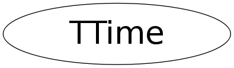

class TTime
TTime Basic time type with millisecond precision.
Function Members (Methods)
public:
| TTime() | |
| TTime(Long64_t msec) | |
| TTime(const TTime& t) | |
| virtual | ~TTime() |
| const char* | AsString() const |
| static TClass* | Class() |
| virtual TClass* | IsA() const |
| long | operator long() const |
| long long | operator long long() const |
| unsigned long | operator unsigned long() const |
| unsigned long long | operator unsigned long long() const |
| TTime | operator*=(const TTime& t) |
| TTime | operator+=(const TTime& t) |
| TTime | operator-=(const TTime& t) |
| TTime | operator/=(const TTime& t) |
| TTime& | operator=(const TTime& t) |
| virtual void | ShowMembers(TMemberInspector& insp) |
| virtual void | Streamer(TBuffer& b) |
| void | StreamerNVirtual(TBuffer& b) |
Data Members
private:
| Long64_t | fMilliSec | time with millisecond precision |
Class Charts
{kind=link}
{kind=link}
{kind=link}
{kind=link}

Function documentation
operator long() const
operator unsigned long() const